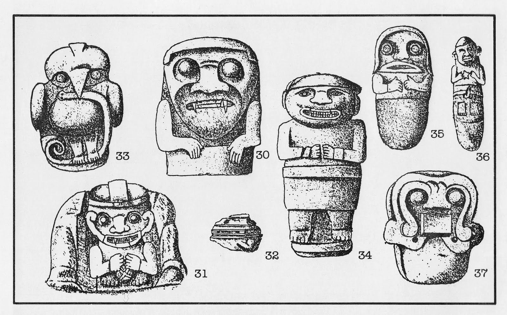

El Parque Arqueológico de San Agustín, Huila, fue creado mediante la Ley 103 de 1931 por el
Congreso de la República de Colombia, mediante la cual se declaraban “de utilidad pública” los
bienes arqueológicos de la región del Alto Magdalena (Artículo 1), se apropiaban presupuestos “para
emprender excavaciones en las regiones del Alto Magdalena, San Agustín y Pitalito” (Artículo 4), se
ordenaba al gobierno “nombrar un arqueólogo de reconocida idoneidad para que efectúe los trabajos a
que dé lugar el cumplimiento de la anterior disposición” (Artículo 5) y se facultaba al “Gobierno
Nacional para comprar los terrenos arqueológicos de las regiones mencionadas con el objeto de
transformarlos en un parque nacional” (Artículo 8).

El interés por estudiar y proteger especialmente los sitios arqueológicos del Alto Magdalena está estrechamente vinculado a la publicación en español
del libro “Arte Monumental Prehistórico” que reportaba los resultados de las primeras investigaciones
arqueológicas en Colombia, adelantadas por el etnólogo Konrad Theodor Preuss en San Agustín,
entre 1913 y 1914.